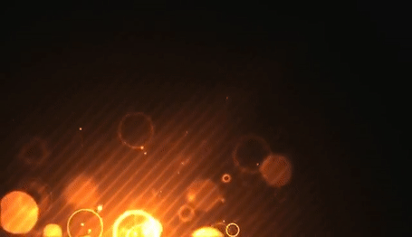
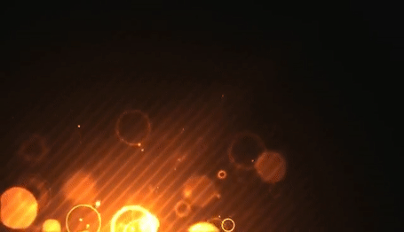

Image of an Eye done in three different file formats png, gif and jpg.
Image of a logo done in three different file formats png, gif and jpg.
 

Animated image in three different file formats gif, png and jpg.
The differences between the three are all about quality and use. Jpg is a great quality image and is a very resonable file size. Png can work with small or large file size and does not deminish the quality of the photo. GIF is an animated picture that is a lower quality size.
The advantages of using JPG is that the quality and file size would work for all situations but you could lose some quality if you look closer at the image. Png is a good file format for transparency photos and wil not lose any image quality. GIF is the king for animation.
I did not notice a huge difference between the quality of the pictures however I did notice a difference in file size. GIF and PNG are a larger file size compared to JPG.
Differences between JPG, PNG and GIF